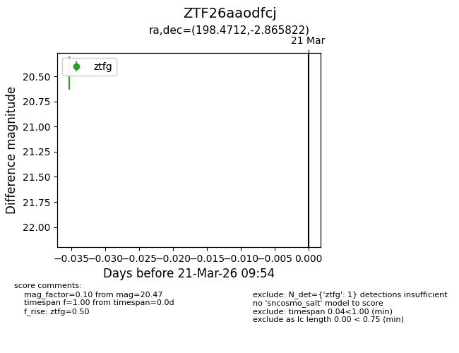
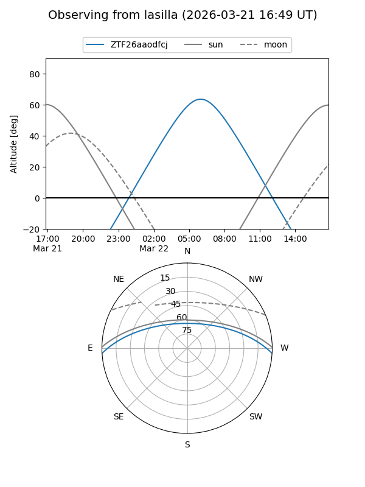
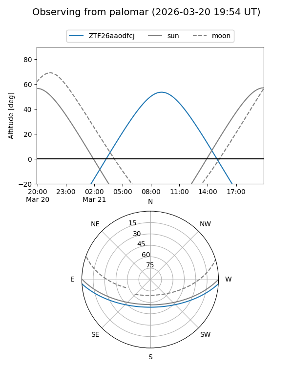

ZTF26aaodfcj
Target ZTF26aaodfcj at 2026-03-21 09:59
Aliases and brokers:
FINK: link
Lasair: link
ALeRCE: link
alt names
ZTF26aaodfcj (ztf,fink_ztf)
Coordinates:
equatorial (ra, dec) = 198.4712,-2.86582
equatorial (HMS+DMS) = 13:13:53.09,-02:51:56.96
galactic (l, b) = (314.0335,+59.52122)
Flags:
Photometry:
last ztfg=20.47
1 ztfg detections
Lightcurve

Visibility


Additional plots